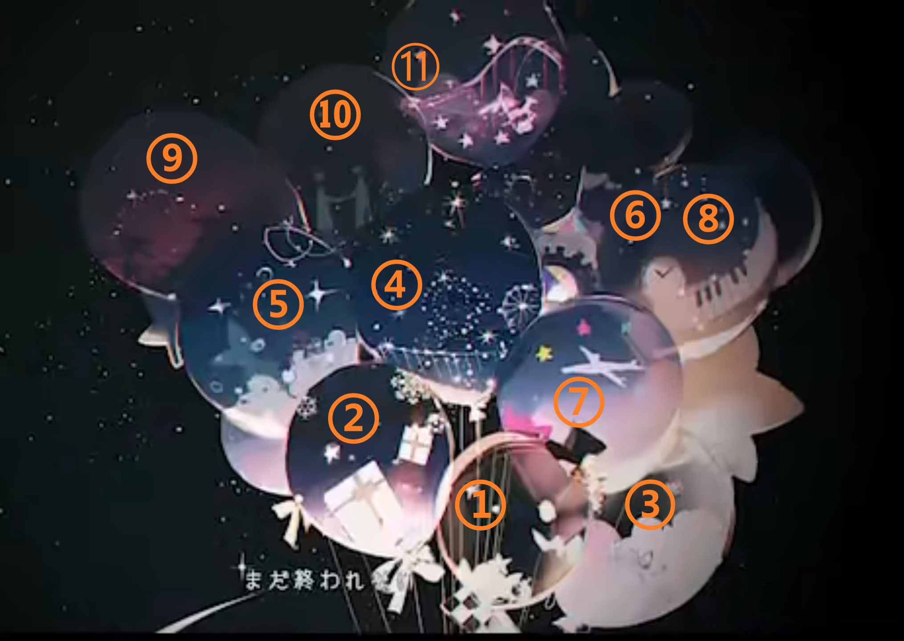

minute(s) read
活動劇情
這期活動真的很難用文字來完整描述我看完時受到的感動，後面又看了好幾次，但感動絲毫不減。
故事梗概
WS延續上期劇情和鳳凰舞台合作演出，演出的劇目叫幸福的鳳凰（ハッピーフェニックス），司也有被分配到角色，但準主角的少年役リオ還未決定，而リオ是他崇拜的偶像天滿星一曾出演過的角色，因此他想爭取看看這個角色。同時間剛好他的偶像有到東京演出，還為了這次表演買了四張票想讓大家一起去看，但日期剛好就在リオ角色試鏡前一天，他為了這個試鏡決定就不去看表演了。試鏡前願意徵選リオ的演員都有機會在練習時和擔任主角鳳凰的青龍院櫻子對戲，而包含司的幾位演員的全都沒辦法達到櫻子的完成度。司也向櫻子請教也試了很多適合自己去揣摩角色心境的方式，不論怎麼練習就是沒辦法有突破。在他面臨這個似乎怎麼樣都無法圖播的困境時，WS其他三個人為了他決定在試鏡前兩天找他一起幫他特訓。因為MEIKO的一句話，司決定去看天滿的演出，或許就可以徹底了解リオ一直都無法抓到在故事裡想抓鳳凰但怎麼樣的都抓不到的絕望心境。看到自己的偶像還是像當年一樣那麼耀眼，自己無論怎麼努力卻還是離他好遠好遠，這份無力感讓司留下了淚水，儘管如此他還是堅持看完整部戲劇，必須徹底理解這種不管怎樣都無法觸碰到最渴望的東西的心境。最後他靠著這個體悟在試鏡下做出了超常水準的演出，最後也順利獲得這個主演角色。
感想
其實司平時就常展現比別人多一倍的努力和鬥志在練習了，但這次的挑戰又更上一層樓，除了比平時加倍的訓練（慢跑10km），還要為了試鏡挑戰不進食3天的感覺真的挺讓人擔心的…幸好有えむ、寧々和類看著他。然後我真的很喜歡這期活動官方去描寫司面對絕境的心境，因為劇情不僅僅只是描寫了司的心情，它還將這份心情昇華成了他的力量，就像這次劇情的主題「鳳凰」一樣，燃於灰燼後重生。我只能說不愧是主線只花1話就想通的人，要讓他面對絕境也放入了這麼多轉折XD從6話開始，每1話司都會表現出一次他面對自己能力不足的「絕望」，但這份感情在這3話間都有不同的意義。
在第6話，司對於試鏡即將到來自己卻毫無突破，感受到了自己的極限而感到挫折，看到前方遙遠的道路上同樣也是往頂點前行的人，反而失去了繼續前進的勇氣。明明去模仿其他演員有有機會可以獲得角色，但就違背了當初想要獲得這個角色的本意。可以說他作繭自縛，但從故事開始我就很欣賞，甚至可以說是嚮往他的勇氣，即使看似很困難的挑戰也要拚盡全力來挑戰。即使看似走到了盡頭，他還是試圖要求自己前進也讓我很感動……不知道為什麼，也許是那份堅持吧，讓我心裡雖然想著不用這麼努力也沒關係，同時也深受鼓舞。不過後來，失去的勇氣是WS幫他重新填滿的，因為他們的信任和支持才讓他重新振作起來，既王道又好感動嗚嗚……這裡的絕望是真的面臨眼前巨大的高牆而退卻的絕望。
第7話，找回了繼續前進的動力，最終找到的解決方式是去看天滿星一的表演。我覺得這裡和二箱トルぺ去看看星星形成了強烈鮮明的對比。トルぺ看到的星星，在遙遠的地方裝滿了夢想、美好的回憶和希望，看著不知不覺就又有了繼續前進的動力。但司看到的這顆的「星星」，在遙遠的舞台上裝滿了自己的夢想、美好回憶和憧憬，但越看越認知到自己有可能一輩子都無法觸碰到那顆星星，心裡不免感受到氣餒、無力感。前一話將他逼到末路的這份心情，反而是現在的他唯一可以突破困境的出路。而選擇正面面對這份感情，有部分也是因為WS為他重新找回了勇氣吧。
到了第8話，司又有展現絕望心境的橋段，但這一次是將他在前一話吸收的感情融入進他的演出裡面。這段高潮真的好精彩，尤其前面幾話裡感覺司在面對負面情緒的時候其實是默默地、安靜地消化這些情感的人，但為了這次演出他把整個感情完全外放出來，我自己在看的時候其實也有點被嚇到w真的叫地超絕望的……而且還入戲入到完全忘記周遭環境，我後來才知道日本好像都叫這種為「憑依型」的演員。實話實說我一開始看故事預告的時候，還以為他這次要拿不到角色了……最後有拿到角色真的太好了……
其實我覺得司會對於自己能力和其他人差距這麼大會有這麼大打擊有部分原因也是因為他是一路自學上來的，不需要和其他人比較吧。進到鳳凰樂園，認識越來越多靠近頂點的人，累積越來越多經驗，才會清楚體會到所謂的差距到底有多少。但反過來說，只靠自學就有辦法這裡，而官方的描述裡面他應該也是靠努力居多，之後去參加課程、挑戰擔綱要角，可見他對這份夢想的熱情。然後我覺得很有趣的是，WS的主題常常有兩個我都會選擇的主題，第一輪拯救樂園時是，類三箱面對和成員分別的可能性也是，而這次也是無意間的在試鏡和看表演的兩個選擇之間兩個都選擇了。
除了司之外，這期WS的3個人也都有各自的心路歷程。えむ經過上次箱活決定全力支持大家的夢想後，這期真的是小天使，很關心其他人的狀況，雖然知道她是做好總有一天會離別的心理準備才這麼豁達會有些難過，但認真為同伴們加油打氣的她真的好亮眼喔QQ而且她也有用自己的方式在努力鑽研自己負責的角色，卡面劇情還滿可愛的推推。
寧寧在上一箱卡面劇情裡就有稍微發現到自己和司在和別人請教、交流上的差距，進而讓她開始複習過去學過的內容，這次司的成功也成功激起了她想要往前突破的動力。寧寧在過去對類是在不同位置上互相提攜，對夕夏是對偶像的模糊憧憬，雖然知道總有一天自己可能會往外走，而且在活動之間她一直有在以自己的步調持續成長，但相比司感覺她對往更高一層走的想法沒有很清晰，但現在就有兩個確實的目標，一個天分很高、用分析演繹角色的櫻子，另一個則是用努力、親身體會去靠近角色的司。司和寧寧現在是作為同伴互相分享知識和一些技巧，但作為演員互相切磋的關係性感覺也在一步步成形，未來也很期待寧寧有在演戲／歌唱方面有更進一步地自我突破！
就像えむ在自己箱活獲得一些自我結論一樣，類這次也非常支持司去挑戰角色，還為了幫助司練習做了鳳凰機器人，在寧寧四星卡面劇情裡請寧寧幫機器人配音時，還用了一點比較委婉的方式給了寧寧演技的建議。其實這邊我覺得也可以看得出類真的很理解WS的成員們，司會比較希望別人直接給他感想或意見，所以給司意見時他都會很明確地指出問題點，但直接指出哪裡有問題可能反而會降低寧寧的動力，所以才用了比較間接的方式幫助她。（其實面對寧寧時類一直持續地鼓勵她用自己的步調前進就好，我覺得也對缺乏自信的寧寧幫助很大）看到司留下悔恨的淚水時，也馬上就理解司的情緒代表什麼。在最後面提到說要讓司往更高更遠的天空中閃耀，同時也要讓四個人可以一起持續閃耀的時候我直接被直擊XD真的形容的太好了吧……在天空最亮眼的一顆星，但這片星空並不是孤獨一人的……加油啊神代類我相信你絕對能找出方法的！
最後想提一點就是關於劇中劇的幸福的鳳凰。我滿喜歡用片段來補完整段劇中劇故事的寫法的，既不會影響到活動故事的節奏，又可以寫出一篇小故事。像這次幸福的鳳凰也是一個超感人的故事，為了受詛咒的媽媽，8歲的小男孩リオ拿著捕蟲網決定去捕捉唯一能拯救他媽媽的東西——一顆鳳凰的心臟。看似火熱實則內心冰冷的鳳凰根本對小男孩不屑一顧，但隨著時間經過兩人逐漸成為好朋友，最後合力解決詛咒媽媽的魔女。雖然也是好結局，但中間リオ為了捕捉鳳凰之心也受盡了苦頭，和活動故事平行線演出的劇中劇真的好有趣。而且在banner的圖案中，也特別畫了兩個部分，一邊是左上角代表司的小星星往代表夢想(天滿星一)的星星前進，尾巴有其他3個人的代表色，在後面支撐著他往前飛，一邊則是下方鳳凰落下治癒的羽毛給リオ的場景，也是司獲得這個角色的關鍵場景。
MV
ちょっとどうもこうも 煮え切らない
とっちらかっちゃって まとまらない
ひとりぼっちの
あれもこれも できやしない？ 回る回る
ぐだって、うだっていくほど 持て余す
首先整段用一個人一個人說話的表現方式真的很可愛，很像真的在演一齣戲一樣。
一開始司的頭像是黑的就像旁白在講話，接下來類和寧寧是方向同邊，像舞台上的群眾接著旁白的開場在同聲講話。
司這時又變成了角色之一，然後巡音和えむ是對立的方向，像在附和歌詞「まとまらない」，面面相覷不知如何是好的感覺。
接下來的整句話三個人又變成了旁白，monologue那句還特地打了聚光燈，就好像在給司獨白舞台效果一樣，還有寧寧那句回る回る思考回路頭像也跟著轉，都好可愛w
司和巡音在できやしない？這句翻黑也像在表達這句是內心戲的台詞。
然後選詞的部分，猶豫不決給類和寧寧，亂成一團給えむ和巡音還滿貼切的，類和寧寧在與人交際上偏向保守，然後好動的えむ和常常睡著的巡音給人一種混亂氣息wあれも～
然後我一直就很喜歡一滴P在歌詞上的對稱感，這整個第一段就是完美的範例之一，歌詞結尾～ない／～ない／片假名詞／～ない／片假名詞／片假名詞，2112的分配就很對稱我聽得超舒服的有人能理解嗎XD
あっちこっち進んで止まって 袋小路IN
行き止まり……でも 諦めない！翔ろ
なら ひとりぼっちじゃ つまらないでしょう
カオスなメンバー集めて あの星を目指せ
接下來這一段又是不同的方式，用玩偶演戲，只是戲碼呢就是主線的劇情，超級可愛的～～！這讓我想到Twilight nighT也有一段是用小人演繹舞台故事。
然後每個玩偶都是本人在拿的這點也是超級可愛的亮點，居然還有背景板XD
後面有巡音在看布偶戲，看起來就像其他人在用布偶戲表演給她看，讓她知道他們相遇的故事。演到在挽回類的時候，出現了類的背影，類是在台下而不是演員之一，也是反映主線其他三個人和初音大哥演戲，用表演讓類感受他們、感受到司的真心的橋段，我個人很喜歡這個小細節！
然後我覺得あの星を目指せ這句人偶的配置也有很多小心思。假設あの星指的是夢想的話，首先司和寧寧是唯二照在聚光燈下的，也是反映出他們是希望站在舞台上的人。類沒有在聚光燈之下，但他離星星也很近，而且也有看向星星、向星星伸手的動作，因為他也是有表演的夢想，只不過是作為幕後人員之一的導演。但えむ不僅離三人和星星最遠，表情緩和而且做出加油的手勢，我覺得也是在表達えむ最初的夢想，想要讓鳳凰樂園充滿笑容，已經完成了，但她想要為持續追夢的三人加油。
這段除了像是在描述主線劇情，也像是在描述這次的活動。嘗試了各種方式卻仍無法掌握角色的司，看似走到了盡頭，但是比起一個人困住，還有WS和世界的大家可以集思廣益試圖找出突破口，而突破口就是他的偶像天滿星一這顆星星。
如果把ちょっとどうもこうも～モノローグ當第一分段，あれもこれもできやしない？～持て余す
まるで掴めやしない 届きやしない 願い星まで
椅子をかけて いざ、登ろうかドリーマーズ
恐れはしない 怯みもしない 呆れるほどに
無謀な愉快な冒険譚 さあ、止まれないまま It’s Showtime!!
副歌就進入Rella大神的成員全身繪啦，真的好美嗚嗚嗚，而且司眼裡的光點還是星星狀的，巡音坐在月亮上的構圖根本女神太美了… 這張圖和背景就讓我想到司一箱的夜晚秀，夜晚中所有的遊樂設施都被點亮，四位角色站在中間，被四周的光影點綴的樣子。然後團曲的It’s Showtime!!歌詞又回來了，歡迎回來XD
然後這段也是呼應了劇情，就好像司坐在台下看著自己的偶像時，自己的夢想看似是那麼遙遠、那麼觸不可及，即使如此自己也不會退卻，要做出讓所有人都驚豔的演出，真的把他的心境用歌詞描述的超好QQ
ねえ 待って待って おかしいな
次の台詞が 飛んじゃった……
迷子になった
なんで？どうして？ やるせない……
不発の
焦げ付いてく敗北の
這邊可以說是同時提到寧寧在過去的失敗以及主線的事故吧，1、2、4行是寧寧遭受挫折之後就此不敢上台，3、5、6行是在說主線遭逢事故，表演沒成功，然後寧寧和司爆發衝突。
類和えむ在迷子になった
雖然不一定有關係，
不発の
用沒有爆開來的爆米花來暗示不賣座(=失敗)選詞真的太好，像國外有個專門評價電影．影集的網站爛番茄就是用爆米花圖是來代表一般觀眾的喜愛程度的。然後後面用味道接到他們失敗後的心情……我超喜歡這整段的。
あれこれ不安で悩んで 遠回り？ 空回り？
予定不調和の
なら 近道ばかりも味気ないだろう？
エンジン全開！ GoGo ジェットコースターで
山も谷も全速！
接續上面，從14話的司的煩惱，到19話和類和解，算是把主線完整帶過了欸哈哈。這裡司和類的是少見的司是擔綱高音，類是低音的組合，事實上整首曲子，像是最後一句類和寧寧合唱「と綴るのさ」的時候，類好像都是唱低音的部分。因為通常在WS箱曲中，司常擔任低音，一直給我一種印象是想要表達他是在背後支持著大家的意象，而這次類幾乎都擔任低音，我想有可能也是要表達他這次換他在支持、幫助司實現夢想吧！
雲霄飛車可能是ref團歌裡面提到的雲霄飛車：星空駆けるジェットコースターを
てんで 笑えやしない 救えやしない 不完全燃焼
花火に乗せて また、飛ばそうか チャレンジャーズ！
昏い
ね？ 顔を上げて Show must Go On!!
大概從第2段開始，描述就開始抽象了起來，但我依然覺得選詞的sense真的很棒。整段就用煙火的意象來代表「挑戰者」(WS)。「笑えやしない 救えやしない」，應該是potato的小彩蛋，在potato第一段，第1句開頭「もう救えない～」和第3句開頭「相当に笑えない～」。不完全燃燒這句話我覺得還滿難理解的，參考V家版本的英文版(I can’t satisfy myself)的翻譯，意思是無法滿足對自己的期許，所以應該是完全字面解讀，燃燒不完全的東西，因此這是個失敗品、不完全物。
然後雖然沒有歌詞，我還是想講一下這裡的Intermission(中場休息)，鼓聲跟掌聲的節奏真的超級超級好聽！整首歌是44拍。一小節裡總共4拍，一拍為四分音符。然後節奏的分配大概是這樣：
| 1(強) | 2(弱) | 3(次強) | 4(弱) | |
|---|---|---|---|---|
| 首次出現的掌聲 | ♩ | ♩ | ||
| 鼓聲 | ♩ | ♩ | ♫ | ♩ |
| 後半段出現的小掌聲 | ♩ | ♫ | ♩ |
掌聲剛好打在強拍，加強節奏韻律感，然後鼓聲在第三拍的時候會有一點小變化調味，在後半段的喇叭吹了兩聲後，又加了第1拍省略的小掌聲，省略通常是小節判定點的第1拍，整個節奏就變得多樣化起來，更有趣。
凡な才の煩悩が
這う這うの体でゆく
欺し欺してナルシスト
気張れや気取れ一等星
かませ
這裡一人一句solo真的超級超級喜歡。前四句都有選擇重複類似字詞的寫法：凡な(Bon Na)才の(Sai No)、這う這う、欺し欺し、気張れ(や)気取れ，整個聽起來就超有韻律感。然後這四句應該都是在用第三視角形容司，個人覺得用ナルシスト和一等星兩句還滿有趣的，因為欺して(自欺欺人)和ナルシスト(自戀者)是偏負面的用詞，気張れ、一等星則是偏正面的詞，就有種對稱感。特別喜歡えむ的ゆく～↗的拖長音還有司有點怒音的かませ。
ハッタリも上等！
自信過剰？
見切り発車
ブレブレ走行
大見得切り
大目玉、食らっても
尽きぬ
這裡是真真實實的一人一句話了XD雖然歌詞上來說是真的很亂，但我很喜歡這種一人插一句的段落欸，真的很像音樂劇裡大家邊唱邊演戲的感覺。然後這裡前6句又是有點對稱的寫法。
- ハッタリも上等！ → 很有自信的宣言
- 自信過剰？ → 懷疑的問句
- 見切り発車 → 馬上就開始行動
- ブレブレ走行 → 但走路又搖搖晃晃的
- 大見得切り → 華麗亮相
- 大目玉、食らっても → 結果有可能受到挨罵
最後兩句「毫無止盡的好奇心」和「勢不可擋」真的超適合WS這個團體的XD
到這邊已經有3個間奏，雖然我沒有譜無法百分百確認，但如果以第2個間奏的節拍點為準的話，第1個間奏和第2個間奏剛好各是8小節(88)，然後第3個間奏是18小節，ひとしずく×やま△真的太神了還藏了這種小細節在音樂裡QQ
語り尽くせない おもいで星を 詰め込んだ風船
銀河を翔てゆく
まだ終われない 終わりたくない
それでも いつかは……
這段司solo配的圖也超級美…Rella大神的光影一如往常的真的太厲害了，一張一張都會烙印在眼裡 而且搭配歌詞，司拿著的氣球裡面都是之前箱活的意象畫！細節真的太神了嗚嗚
這裡就用圖標一個一個小小說明，或多或少都是參照活動banner上的設計去畫的：

①全力！ワンダーハロウィン！：類在馬鈴薯的衣裝帽子
② 聖なる夜に、この歌声を：聖誕節banner上的雪花和禮物
③スマイルオブドリーマー：那期活動插圖主題的雲朵、氣球和糖果
④ワンダーマジカルショウタイム！：banner上的遊樂設施，也是代表那期的夜晚秀
⑤マーメイドにあこがれて：banner上的人魚尾巴和泡沫
⑥Revival my dream：banner上的帳棚以及那期衣裝主題之一的齒輪／蒸氣龐克
⑦POP IN MY HEART!!：banner上的飛機和代表四人的星星
⑧まばゆい光のステージで：banner上的星星狀墜飾、鋼琴和懷錶
⑨絶体絶命！？アイランドパニック！：3DMV的舞台背景，傍晚的夏日海灘
⑩カーテンコールに惜別を：banner上，同時也是那期劇碼的兩個仿生人
⑪夢の途中、輝く星たちへ：banner上的摩天輪和旋轉木馬
不能結束、不想結束，握緊這些珍貴回憶的手和認真的神情，但到それでも いつかは……的時候特地聚焦在拿著氣球的手，就像在配合歌詞一樣，總有一天，會在這趟沒有終點的旅程迎來終結，不過在那天到來之前，自己要繼續前行…… 真的超喜歡這裡的mv製作！！！歌詞的涵義透過圖像跟動畫有更加細微的心情詮釋。
現在知道劇情後，這段也有第二層的含意，劇中リオ為了母親不斷地追求那遙不可及的鳳凰，自己已經多日沒有進食，一切看似毫無希望，總有一天自己有可能就會就此倒下吧，但他還不能讓這趟旅程結束，也不想結束……就是這樣的心境也重疊到了歌曲裡面。如同當劇中的リオ踏出家門追尋鳳凰時手上的捕蟲網是他拯救媽媽的唯一希望，司在追逐自己最渴求的東西時，和WS一路走來的成長、他們的幫助是他突破這次困境的唯一希望。
一層踊り明かせ 歌い明かせ Stardust Parade
果てない
忘れやしない 嘆きやしない 「別れ」じゃないから
無謀な愉快な伝説は
破天荒型 Step by Stepで はちゃめちゃくちゃの
ワンダホーイっと 綴るのさ Mr. Showtime
最後面這個Mr. Showtime的小動畫真的太作弊了..!!真的有夠帥嗚嗚…
「忘れやしない 嘆きやしない」短短兩句話但四個人的心境在唱的時候都不太一樣。
忘れやしない ——司對於WS幫助他，讓他能成功突破這次的難關，所以他不會忘記對他們的感謝；えむ承襲上次的彼得潘主題，就算迎來結束，四人總有一天要分離，自己也不會忘記跟他們的旅程。
嘆きやしない——類因為他打算想要找出能四人在一起並且繼續往前的結局，因此他不會哀嘆；寧寧為了珍惜和大家繼續在一起的時光，因此沒有時間哀嘆了。
「別れ」じゃないから感覺一滴寫這句有點調皮w好像在跟玩家說這次的故事不是真正迎來分別的時刻，也不是以「分別」為主題。
最後除了這是第88期的活動，這首曲子剛好是編號333，333也是個有特殊涵意的數字。據說333是天使的數字，代表樂觀、成長和幸運，也蘊含人生會出現重大轉機、該向前邁進的含意。另外，3+3+3=9，這剛好是えむ、寧々、類和VS6個人的數字，我自己也會解釋這一首曲子、司這次的成長，也是獲得眾人的幫助才得以突破。再來就是3(さん)和司(つかさ)的さ發音相似，我覺得也是剛好和我前面提到的，司在故事裡3次展現出絕望、挫折時不同的心境轉折。雖然上面的搞不好有幾個只是我自己過於臆測，但不管哪個解釋我都很喜歡所以都拿出來講，而且這個編號真的很適合這期以鳳凰為主題之一、也是司在遇到重大挫折時重新找到新的道路向前的活動曲！
小結
最後想說一點想法來做總結。
首先我想說我很佩服廣瀨大介，演唱根據曲子不同也會用不同的表現手法。正是因為是天馬司，劇情裡面都有特別提到自己的特長是分飾角色的司，我覺得這個方向真的很棒。WS本身就是個成員風格光譜滿廣的一團，司身為團長也能和團員的風格去搭配，用這樣的角度去思考之後，就讓我更加喜歡官方為司／廣瀨所做出的聲音方向決定。翻唱曲、其他箱曲裡面就有不同的唱法和詮釋，但這畢竟是活動感想，所以我想以司箱曲子之間的變化差異為焦點。
一箱的トンデモワンダーズ歌曲是首風格明亮調皮的曲子，故事本身也是充滿希望和光明，所以司的聲音就很有朝氣，唱的時候充滿活潑、可愛的語調。二箱的88☆彡可以說就是用トルぺ的角色去唱歌的，帶有點膽怯但又充滿溫柔，這首溫柔優美又熱鬧的曲子我覺得是本身就是一個融合劇中角色トルぺ和司本人的曲子，所以歌詞裡帶著司的元氣，語調裡帶著トルぺ的溫柔我覺得也是一個很棒的融合。而最後三箱Mr.Showtime前面像是在煩惱般的自言自語，後面又帶著為了夢想、為了渴求之物，就算也要繼續前行的決心的心情。
前面也有提到過司身為團長能和團員的風格去搭配這件事。雖然我不知道是不是官方刻意安排的，但在整個遊戲的故事極有可能在3周年的時候更新主線、一個角色拿到的箱曲差不多3首的情況下，司3首曲子剛好分別跟其他成員的風格有些靠近(至少我是這樣想的)真的很天才。這並不是說司沒有自己的風格，他的箱曲其實都有類似的風格，偏向熱鬧、明亮、充滿希望。而是在這個前提下，3首曲子的曲風也分別落在光譜上不同的地方。トンデモワンダーズ有點えむ的淘氣、88☆彡有點寧寧的優雅、Mr.Showtime則是有點類的神祕。我真的不知道官方有沒有這麼神還是只是我想太多，但讓箱曲保持角色特性的同時，又帶有點其他人的色彩，真的讓我非常非常非常感動，因為司真的很重視身邊的人。因為咲希找到了夢想，因為冬彌肯定自己的夢想，因為WS才能找回重新重要的心願、在人生低潮時能找到繼續往前的動力，在他帶動其他人前進的同時也受他人的鼓勵而激發繼續往前的動力，這樣的一個關係性也能在箱曲裡面窺見。
單論Mr.Showtime真的是非常華麗的一首曲子，不管是曲子MV風格、曲風還是聲優的唱法，我覺得有把平常一滴x鈴之助加相乘的華麗感表現得淋漓盡致。除了司這次有很多solo part之外，中間也有大家solo句子，讓箱活主角發光之餘其他的角色也都有一些亮點的曲子，這真的完全是我心目中的理想司箱曲！然後這次的分唱part也很多樣，如果我沒聽錯的話，除了寧寧+えむ和寧寧+巡音之外，兩兩pair的組合都有分到合唱句子，能聽到不同的聲音組合真的超開心！
這次能看到ひとしずく×やま△和Rella的世界版組合，又有和鈴ノ助的V家版組合真的超級開心，簡直就是我的夢幻組合和一直以來都很愛的組合同時登場的概念，而且劇情又寫得這麼好，讓我真的是拚盡了全力無論如何都想要把這次的感想給生出來。雖然因為要跑排名最終還是無法在活動結束當天如期完成，但我還是盡全力將我喜歡的地方努力寫出來分享給大家，希望大家也能去看看這期的活動還有歌曲！